PES University, RR Campus · Department of CSE
UE24CS352A Machine Learning · Hackathon
Technical report
| Name | SRN | Part |
|---|---|---|
| Data, features, baseline models | ||
| Tuning, HMM, API | ||
| Evaluator UI | ||
| EDA, maps, plots, report |
https://github.com/prajnaholla12/pathsnap-ml-hackathon
For every GPS reading of a trip we predict the road arc the vehicle was on, then rebuild the driven route. The repository is split into stages, one folder each:
| Folder | What it does |
|---|---|
| pathsnap-training | projection, candidates (8 nearest arcs), 8 features, label alignment, 5 baseline classifiers |
| pathsnap-eda | dataset exploration (section 2) |
| pathsnap-tuning | Bayesian optimisation of the chosen model (section 4) |
| pathsnap-hmm | HMM + Viterbi decoding, decoder tuning (section 5) |
| pathsnap-viz | Folium maps and every comparison figure (sections 3, 6) |
| pathsnap-api / pathsnap-ui | FastAPI backend on Laptop 1, evaluator page on Laptop 2 (section 7) |
Final system on student_test (10 trips, 19,160 readings): 91.75% top-1 accuracy and Macro F1 0.9033, up from 85.30% / 0.7571 for the untuned classifier alone. Length-weighted route F1 is 0.972.
Partitions: train (80 trips) and student_test (10 trips) only. The evaluator test trips were never read.
Code: pathsnap-eda/eda.py on the feature cache made by pathsnap-training/data.py.
| File | Columns | Size | Meaning |
|---|---|---|---|
| .track | lon, lat, t | 208,417 rows (train), 19,160 (student_test) | GPS readings |
| .nodes | lon, lat | 299 – 155,003 per trip | row index = node id |
| .arcs | from_node, to_node | 649 – 307,392 per trip | row index = arc id, directed |
| .route | arc id | 59 – 2266 arcs | ordered driven arcs, no timestamps |
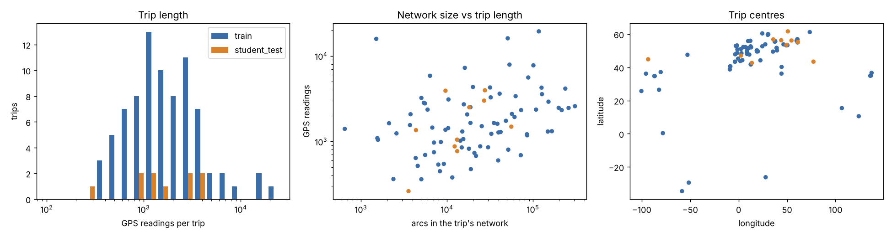
| Check | train | student_test |
|---|---|---|
| Invalid / missing coordinate rows | 0 | 0 |
| Trips with out-of-order timestamps | 0 | 0 |
| Duplicate timestamps | 0 | 0 |
| Gaps over 10 s | 590 | 27 |
| Largest gap | 153064 s | 210 s |
| Trips with > 20% of readings > 50 m from the aligned arc | 2 | 0 |
Nothing is missing, so nothing is imputed. The real gaps are in time: most steps are 1 s, but there are 590 gaps over 10 s in train, and trip 00000090 pauses for 43 hours. Section 5 handles gaps in the transition model.
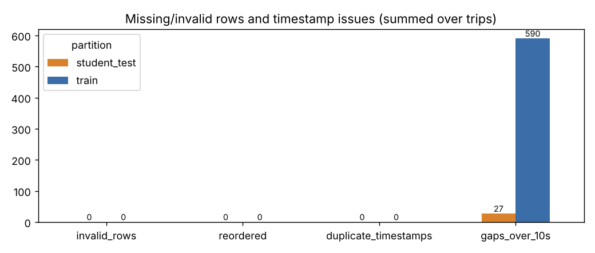
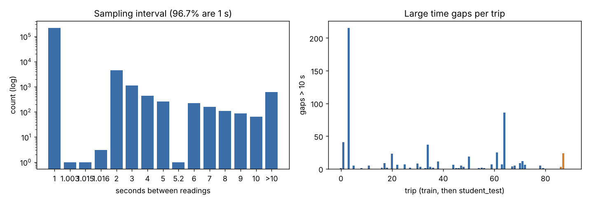
No node is isolated, but the directed graphs are fragmented: median 107 strongly connected components per trip, with the largest one holding a median 96% of nodes. Some arc pairs really are unreachable, which is why the HMM penalises rather than forbids them. Reference routes are almost always connected (lowest share of connected steps: 98.1%).
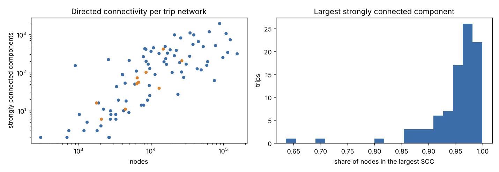
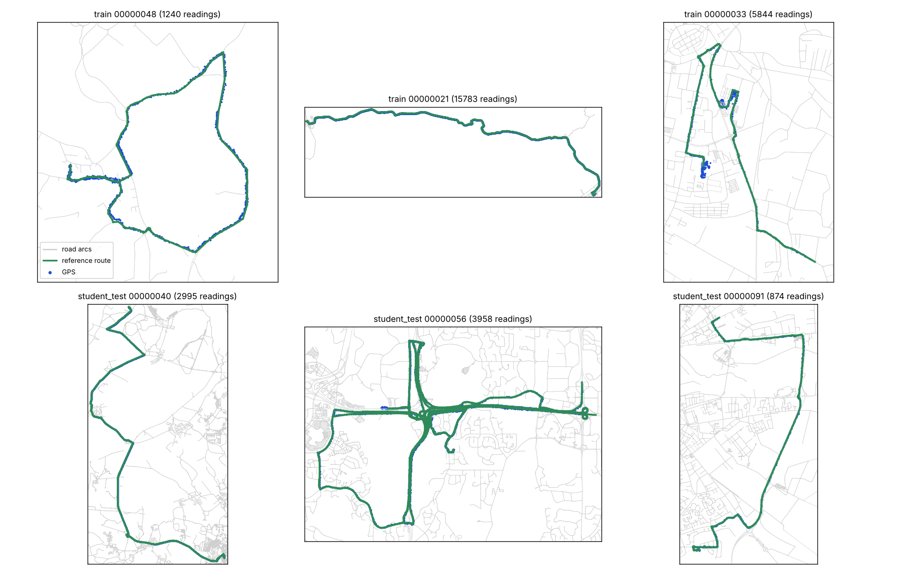
The median distance from a reading to its aligned arc is about 5 m. Two train trips (00000033, 00000054) are exceptions: long stretches of GPS lie 120–160 m from the reference route (trip 00000033 spends time in car parks the route skips). Figure 2.6 shows them. They matter later: they sit in folds 1 and 4, which are the two low CV folds for every model. Candidate miss rate on student_test is 0.36%.
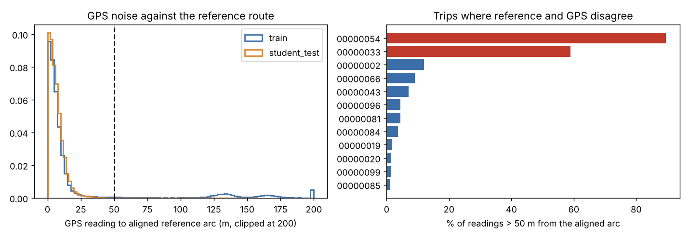
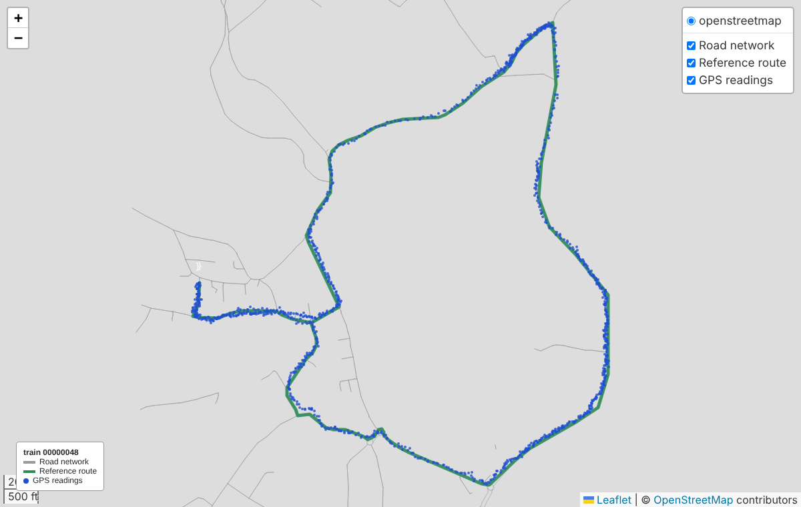
| Feature | Definition | Why it helps |
|---|---|---|
| log_distance_m | log(1 + distance to the arc) | closest arc is usually right |
| heading_cosine | cosine between movement (i−1 → i+1) and arc direction | separates the two directions of a road |
| log_speed_mps | log(1 + speed) | heading is unreliable when stopped |
| log_segment_length_m | log(1 + arc length) | short junction stubs vs long road arcs |
| projection_fraction | where the reading projects on the arc (0–1) | readings at an arc end may belong to the next arc |
| distance_rank | rank among the 8 candidates | relative closeness |
| log_previous_distance_m / log_next_distance_m | distance of readings i−1 and i+1 to the same arc | uses the local trajectory, not one noisy point |
Protocol (pathsnap-training/train.py): 5-fold GroupKFold over the 80 training trips (folds in
results/folds.json), refit on all 80, score on student_test. Seed 42.
Metrics: top-1 accuracy pooled over readings (candidate misses count as wrong); Macro F1 over arc classes within each trip,
averaged over trips; covered log loss on readings whose true arc is among the candidates (scores normalised over the 8);
direct continuity = share of consecutive predictions that stay on an arc or move to a connected one.
| Model | Family | Key configuration | CV Macro F1 (mean ± std) | Top-1 accuracy | Route continuity | Student-test Macro F1 | Log loss | Inference time / trip |
|---|---|---|---|---|---|---|---|---|
| Logistic Regression | Linear | StandardScaler + L2, C=1, max_iter=500 | 0.6955 ± 0.0411 | 84.58% | 91.7% | 0.7122 | 0.5892 | 3.4 ms |
| Gaussian Naive Bayes | Probabilistic | defaults (var_smoothing=1e-9) | 0.6920 ± 0.0378 | 84.61% | 92.5% | 0.7189 | 0.7242 | 3.8 ms |
| Decision Tree | Tree | max_depth=10, min_samples_leaf=30 | 0.7277 ± 0.0424 | 85.03% | 92.5% | 0.7503 | 0.3682 | 2.2 ms |
| Random Forest | Ensemble (bagging) | 60 trees, max_depth=12, min_leaf=15, max_samples=0.5 | 0.7340 ± 0.0414 | 85.40% | 92.9% | 0.7572 | 0.3613 | 82.7 ms |
| Histogram Gradient Boosting | Ensemble (boosting) | 100 iterations, 31 leaves, lr=0.1, no early stopping | 0.7383 ± 0.0418 | 85.30% | 92.6% | 0.7571 | 0.3399 | 149.3 ms |
| HistGB tuned (section 4) | Ensemble (boosting) | Optuna TPE, see Table 4.1 | 0.7446 ± 0.0391 | 85.81% | 93.3% | 0.7700 | 0.3329 | 113.8 ms |
| HistGB tuned + HMM (section 5) | Sequence model | w=0.25, β=25 m | N/A (decoder tuned on train OOF) | 91.75% | 97.7% | 0.9033 | N/A (Viterbi path) | + Viterbi, see 7 |
Table 3.1 – CV over the train folds; all other columns on student_test. The last two rows are the later stages, included for comparison.
Selection. HistGB has the best CV Macro F1 (0.7383) and the lowest log loss (0.3399). Random Forest is marginally ahead on student_test top-1 (85.40% vs 85.30%) and Macro F1, but the gaps between the three tree models are much smaller than the fold-to-fold spread (± 0.042). We chose HistGB because it wins on the pre-agreed objective (CV Macro F1), has the best-calibrated scores (they become HMM emissions), and fits in 16 s against 131 s for Random Forest, which made a 20-trial Bayesian search affordable.
The two weak folds. CV top-1 for HistGB is 60.94% on fold 1 and 69.77% on fold 4, against 80–90% on the others, for all five models alike. Those are the folds holding the two trips with drifting references (2.5), so the CV numbers are pulled down by label noise, not model failure.
Why it fits. A linear model is the natural first baseline: most features push one way (closer, better aligned, closer neighbours → more likely).
Strengths and limitations here. Fast and stable across folds, but it cannot model interactions such as heading mattering only when the vehicle moves, so its scores are the least sharp of the five (log loss 0.5892).
StandardScaler fitted inside each fold, L2 penalty, C = 1, lbfgs, max_iter = 500. Objective: L2-regularised binary cross-entropy.
student_test: top-1 84.58%, Macro F1 0.7122 (precision 0.7420, recall 0.7011), covered log loss 0.5892, direct continuity 91.7%. CV Macro F1 0.6955 ± 0.0411 over the 5 folds. Fit time 2.0 s; 3.4 ms per trip at inference.
Over/underfitting. train Macro F1 0.6957 (model refit on all 80 trips, scored on them), CV 0.6955, student_test 0.7122: train and CV are within 0.000 of each other, so there is no sign of overfitting; the model is limited by its form (mild underfitting) rather than by variance. student_test scores higher than CV for every model because its 10 trips have no drifting references.
Why it fits. Cheap probabilistic baseline that shows how far per-feature evidence goes on its own.
Strengths and limitations here. Trains in under a second. Its independence assumption is wrong here: log_distance, previous and next distance all measure the same thing, so evidence is counted three times and scores are overconfident (worst log loss, 0.7242).
Default GaussianNB, var_smoothing = 1e-9. Objective: maximum likelihood of per-class Gaussians (closed form).
student_test: top-1 84.61%, Macro F1 0.7189 (precision 0.7479, recall 0.7080), covered log loss 0.7242, direct continuity 92.5%. CV Macro F1 0.6920 ± 0.0378 over the 5 folds. Fit time 0.5 s; 3.8 ms per trip at inference.
Over/underfitting. train Macro F1 0.6920 (model refit on all 80 trips, scored on them), CV 0.6920, student_test 0.7189: train and CV are within 0.000 of each other, so there is no sign of overfitting; the model is limited by its form (mild underfitting) rather than by variance. student_test scores higher than CV for every model because its 10 trips have no drifting references.
Why it fits. A single tree captures the interactions the linear model misses and is easy to inspect.
Strengths and limitations here. Clear jump over the linear/probabilistic models. A single tree is high-variance, which shows in its fold spread; depth and leaf limits keep it in check.
max_depth = 10, min_samples_leaf = 30. Objective: Gini impurity at each split.
student_test: top-1 85.03%, Macro F1 0.7503 (precision 0.7771, recall 0.7405), covered log loss 0.3682, direct continuity 92.5%. CV Macro F1 0.7277 ± 0.0424 over the 5 folds. Fit time 29.0 s; 2.2 ms per trip at inference.
Over/underfitting. train Macro F1 0.7345 (model refit on all 80 trips, scored on them), CV 0.7277, student_test 0.7503: train is 0.007 above CV, a small overfitting gap held back by the depth/leaf limits. student_test scores higher than CV for every model because its 10 trips have no drifting references.
Why it fits. Averaging many decorrelated trees reduces the variance of a single tree on noisy GPS.
Strengths and limitations here. Best student_test top-1 of the baselines, but the slowest to train (131 s) and to run (83 ms per trip).
60 trees, max_depth = 12, min_samples_leaf = 15, max_samples = 0.5. Objective: Gini impurity.
student_test: top-1 85.40%, Macro F1 0.7572 (precision 0.7829, recall 0.7481), covered log loss 0.3613, direct continuity 92.9%. CV Macro F1 0.7340 ± 0.0414 over the 5 folds. Fit time 131.2 s; 82.7 ms per trip at inference.
Over/underfitting. train Macro F1 0.7419 (model refit on all 80 trips, scored on them), CV 0.7340, student_test 0.7572: train is 0.008 above CV, a small overfitting gap held back by the depth/leaf limits. student_test scores higher than CV for every model because its 10 trips have no drifting references.
Why it fits. Boosting fits each tree to the previous trees' errors, which suits the remaining hard cases (junctions, parallel roads); it optimises log loss directly.
Strengths and limitations here. Best CV Macro F1 and log loss, fast to fit. More hyperparameters to set, which section 4 tunes.
100 iterations, learning_rate 0.1, 31 leaf nodes, no early stopping. Objective: binary log loss.
student_test: top-1 85.30%, Macro F1 0.7571 (precision 0.7820, recall 0.7483), covered log loss 0.3399, direct continuity 92.6%. CV Macro F1 0.7383 ± 0.0418 over the 5 folds. Fit time 16.5 s; 149.3 ms per trip at inference.
Over/underfitting. train Macro F1 0.7432 (model refit on all 80 trips, scored on them), CV 0.7383, student_test 0.7571: train and CV are within 0.005 of each other, so there is no sign of overfitting; the model is limited by its form (mild underfitting) rather than by variance. student_test scores higher than CV for every model because its 10 trips have no drifting references.
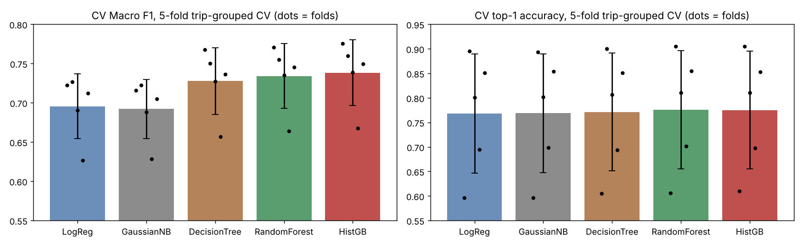
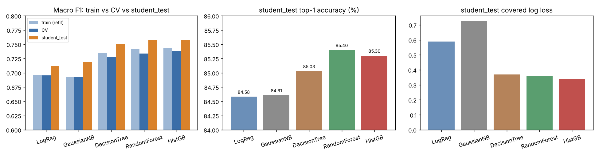
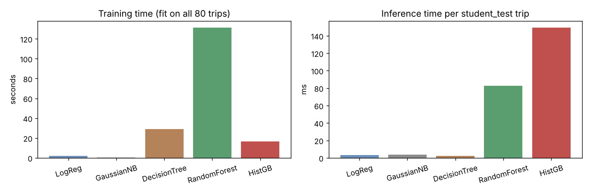
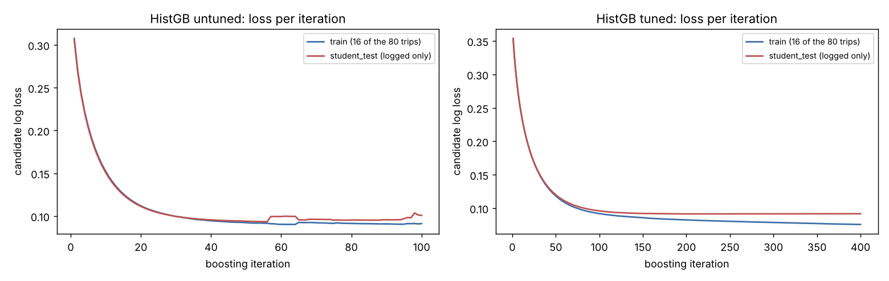
The untuned curve flattens after about 40 iterations; train and student_test stay together, so 100 iterations do not overfit. The tuned model (400 iterations, smaller learning rate) keeps lowering training loss to 0.0757 while student_test settles at 0.0914: a small, growing gap, but no rise.
Method: Optuna TPE sampler (seed 42, 6 random start-up trials), pathsnap-tuning/tune.py.
Trial 0 is the untuned setting. All trials are in results/trials.csv and optuna_study.db.
1–2. Hyperparameters and ranges / 5. best values:
| Hyperparameter | Search range | Best value |
|---|---|---|
| learning_rate | log-uniform 0.02 – 0.3 | 0.0323 |
| max_iter | 50 – 400, step 25 | 400 |
| max_leaf_nodes | log-uniform 8 – 128 | 128 |
| min_samples_leaf | log-uniform 10 – 400 | 41 |
| l2_regularization | log-uniform 1e-4 – 10 | 0.00087 |
| max_features | uniform 0.4 – 1.0 | 0.425 |
3. Objective: CV Macro F1, computed exactly as in train.py on the same folds. student_test plays no part in the search.
4. Trials: 20 completed, 23 minutes of CV on a 2-core laptop. Best: trial 14 with CV Macro F1 0.7446.
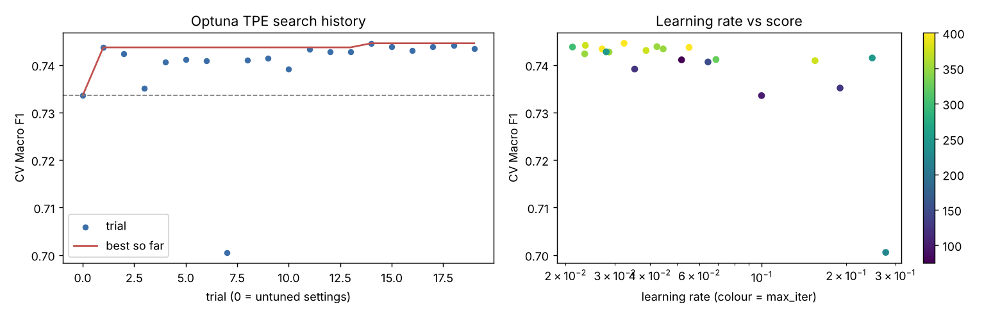
6. Tuned vs untuned, both rerun through the same protocol:
| Metric | Untuned | Tuned |
|---|---|---|
| CV Macro F1 (± fold std) | 0.7362 ± 0.0371 | 0.7446 ± 0.0391 |
| CV top-1 | 75.98% | 75.47% |
| student_test top-1 | 85.63% | 85.81% |
| student_test Macro F1 | 0.7633 | 0.7700 |
| student_test covered log loss | 0.3380 | 0.3329 |
| direct continuity | 92.8% | 93.3% |
| fit time / inference per trip | 4.4 s / 23 ms | 24.2 s / 114 ms |
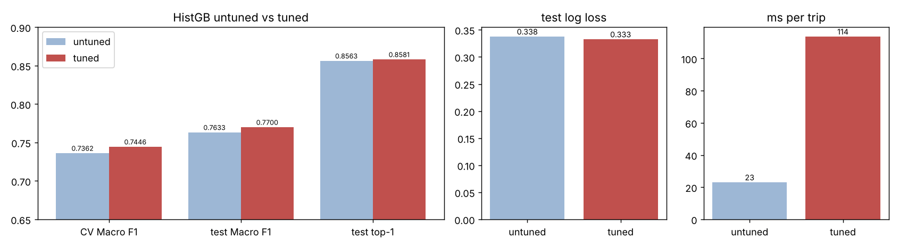
The tuned model is better on the objective (+0.0083 CV Macro F1) and on every student_test metric, but the gains are small next to the fold spread, and inference is about 5× slower (still about 0.1 s per trip). CV top-1 went slightly down, because Macro F1 rewards getting short, rare arcs right while pooled top-1 is dominated by long arcs. The big remaining errors are geometric ambiguity, which the HMM targets. Note: the untuned rerun here gives CV Macro F1 0.7362, while the committed train.py run gives 0.7383. The settings are identical; the difference is run-to-run numerical noise in the boosting library across machines, so we compare tuned and untuned only within the same run.
Code: pathsnap-hmm/hmm.py, decode.py.
1. Hidden states: the 8 candidate arcs of each reading (from data.py), so every state maps straight back to an arc id. The reading's projection fraction on the arc gives the position used by the transition.
2. Emission: log P(zi | arc) = w · log p(arc), where p is the tuned HistGB score normalised over the 8 candidates.
3. Transition: route distance droute from the projection on arc a to the projection on arc b (rest of a + Dijkstra shortest path from a's end node to b's start node + part of b; on the same arc, the movement along it, with backward movement ×3). log P(b | a) = −|droute − dstraight| / β, dstraight = distance between the two GPS readings. A jump to a parallel road needs a detour and is penalised. Viterbi keeps back-pointers and renormalises scores every step.
4. Gaps: β grows with the time gap, β + βgap·(Δt − 1), and the Dijkstra search radius grows with the straight distance (max(400 m, 3d + 200 m)), so long gaps allow longer detours. Candidates always exist (8 nearest arcs), so no reading is skipped.
5. Disconnected segments: unreachable pairs get a fixed log-probability of −40 instead of zero, so Viterbi always has a path. These are counted as breaks. Afterwards, non-adjacent consecutive arcs are joined by a shortest path (stitching) to give a drivable route.
Decoder tuning: grid w ∈ {0.25, 0.5, 1, 2}, β ∈ {2, 5, 10, 25, 50} m, βgap ∈ {1, 5} on 24 training trips using out-of-fold probabilities, selected on mean Macro F1. Chosen: w = 0.25, β = 25 m, βgap = 1. On those trips Macro F1 rose from 0.7759 to 0.9072. The grid shows a ridge along the ratio w/β; several settings on it are within 0.002.
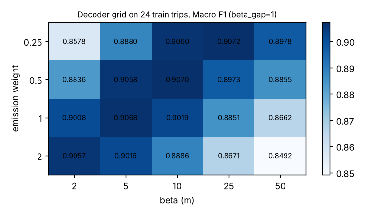
6. Classifier-only vs HMM on student_test:
| Sequence-level | Classifier only | Classifier + HMM |
|---|---|---|
| Top-1 accuracy (pooled) | 85.81% | 91.75% |
| Macro F1 (mean over trips) | 0.7700 | 0.9033 |
| Direct route continuity | 93.3% | 97.7% |
| Arc runs (reference: 3,108) | 5,541 | 3,471 |
| Route F1 after stitching | 0.806 | 0.972 |
| Trip | Readings | Top-1 clf → HMM | Macro F1 clf → HMM | Continuity clf → HMM | Arc runs clf / HMM / ref | Route F1 clf → HMM | Breaks | Viterbi s |
|---|---|---|---|---|---|---|---|---|
| 00000000 | 2503 | 94.33% → 96.08% | 0.760 → 0.876 | 96.7% → 99.6% | 285 / 201 / 174 | 0.943 → 0.993 | 1 | 0.17 |
| 00000007 | 1354 | 94.83% → 99.34% | 0.956 → 0.981 | 99.7% → 100.0% | 209 / 123 / 121 | 0.977 → 0.993 | 0 | 0.10 |
| 00000009 | 1049 | 86.37% → 91.90% | 0.798 → 0.894 | 88.5% → 94.1% | 441 / 387 / 361 | 0.786 → 0.950 | 0 | 0.25 |
| 00000040 | 2995 | 91.39% → 94.32% | 0.800 → 0.973 | 96.7% → 99.7% | 560 / 336 / 299 | 0.842 → 0.998 | 0 | 0.20 |
| 00000052 | 262 | 96.18% → 100.00% | 0.841 → 1.000 | 94.6% → 96.6% | 85 / 83 / 83 | 0.791 → 0.998 | 0 | 0.02 |
| 00000056 | 3958 | 89.19% → 95.70% | 0.832 → 0.935 | 90.9% → 96.7% | 1448 / 1201 / 1169 | 0.849 → 0.976 | 0 | 0.33 |
| 00000065 | 768 | 82.81% → 88.67% | 0.710 → 0.862 | 93.2% → 98.3% | 220 / 145 / 129 | 0.697 → 0.893 | 1 | 0.09 |
| 00000076 | 1486 | 87.95% → 94.62% | 0.640 → 0.811 | 89.2% → 96.0% | 491 / 361 / 333 | 0.647 → 0.960 | 0 | 0.35 |
| 00000077 | 3911 | 68.29% → 79.06% | 0.609 → 0.814 | 93.4% → 99.2% | 1513 / 441 / 257 | 0.758 → 0.969 | 0 | 0.30 |
| 00000091 | 874 | 86.73% → 92.91% | 0.753 → 0.885 | 90.0% → 97.0% | 289 / 193 / 182 | 0.774 → 0.988 | 0 | 0.10 |
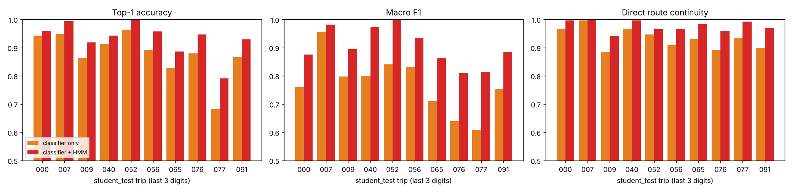
The HMM improves all 10 trips. The classifier alone switches arcs 5,541 times against 3,108 in the reference, flicking to the reverse direction or a side road for a reading or two; the HMM output has 3,471 runs.
Where it still fails. Errors concentrate at low speed (Figure 5.3). Below 1 m/s the HMM is right 69% of the time and at 1–5 m/s 73%, against 99.4% above 15 m/s. When the vehicle crawls, the heading is noise and both directions of a road are equally close, and 58% of the HMM's remaining errors pick the reverse-direction twin of the right arc. Trip 00000077 shows it most: 45% of its readings are below 5 m/s, against 0–23% for the other trips, and it is the weakest trip (top-1 79.06%), even though its route F1 is 0.969: the right roads, sometimes the wrong direction.
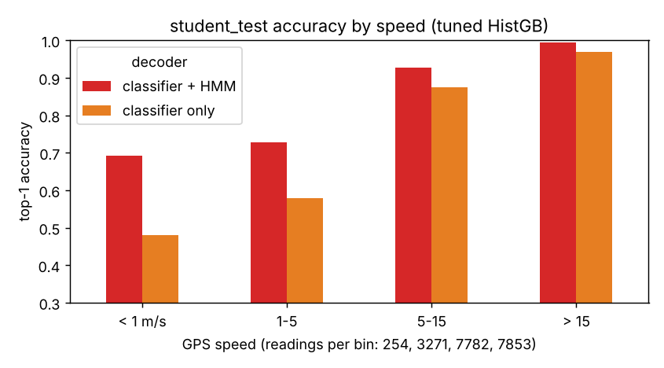
pathsnap-viz/make_maps.py writes one map per student_test trip (maps/prediction_<id>.html) plus EDA maps.
Layers can be toggled: road network near the trip, reference route (green), classifier-only route (orange, dashed), HMM route (red),
GPS readings with time tooltips, and start/end markers. Screenshots below are exported without the tile background.
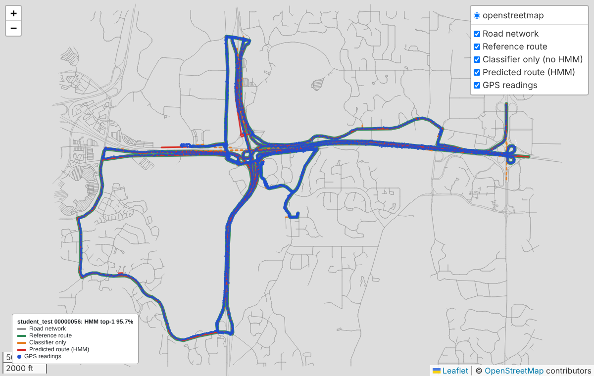
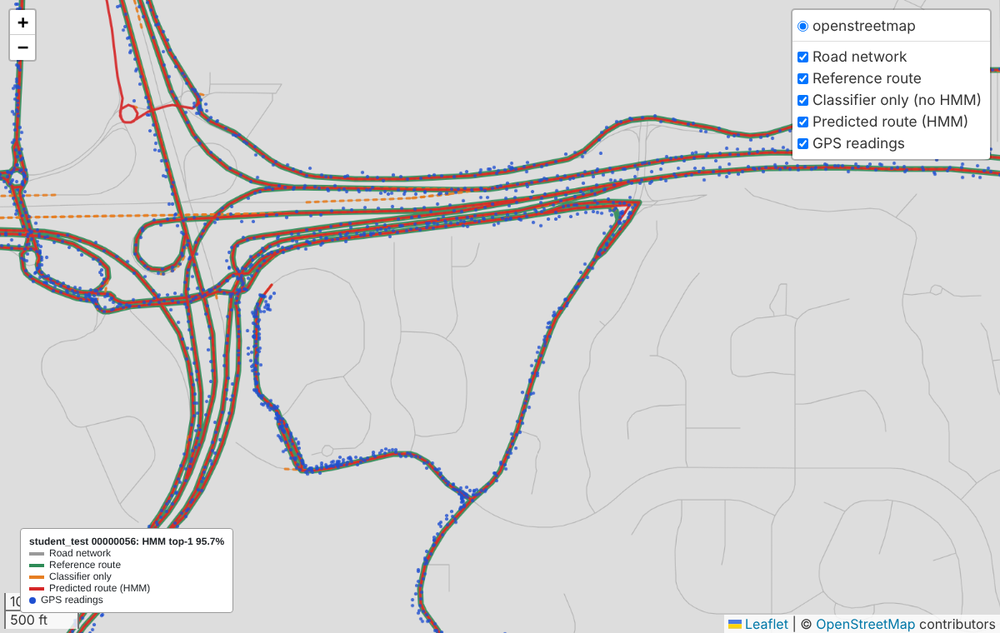
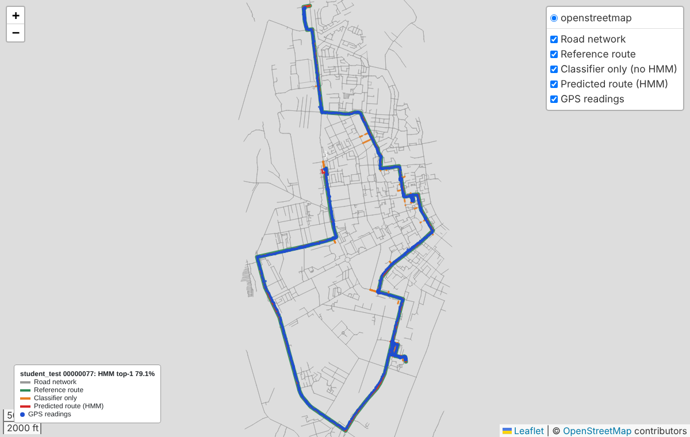
Laptop 1, pathsnap-api (FastAPI + uvicorn) loads the tuned model and decoder settings once and lists the trip folders in
data/eval/. /predict runs data.prepare_candidates → classifier → Viterbi → stitching. Only after that does
scoring.py read the .route file, align it with the same dynamic program as training, and compute the metrics. Only
numbers go back; no reference geometry is sent. Nothing is cached per trip, so every request runs the whole pipeline (timings in the log).
| Endpoint | Returns |
|---|---|
| GET /health | status, trips, model |
| GET /trips | ten trip ids with reading counts |
| POST /predict {trip_id} | GPS, HMM route, classifier-only route, per-reading arcs, candidate network, metrics, timings |
Laptop 2, pathsnap-ui: static page (python -m http.server) with bundled Leaflet. It lists the trips from
/trips, sends only the selected id, and draws the returned layers next to the metrics.
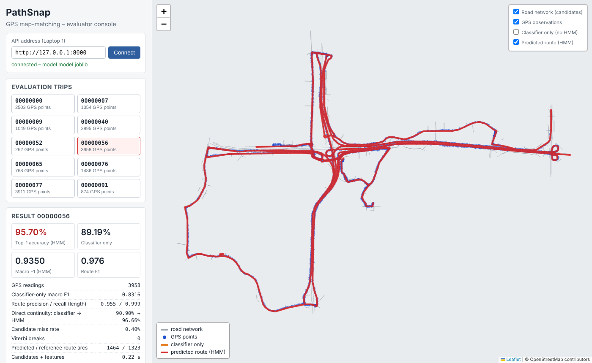
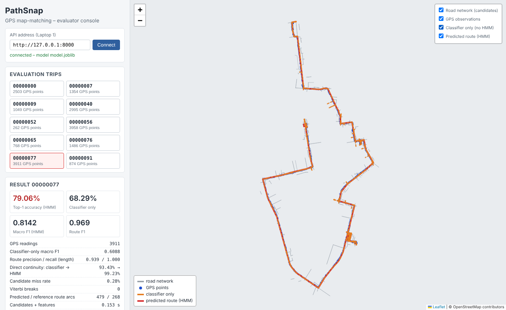
API log while the UI and a test client requested all ten trips and one unknown id:
INFO: Started server process [1286] INFO: Waiting for application startup. 10:22:51 | INFO | model: pathsnap-tuning/results/tuned_model/model.joblib 10:22:51 | INFO | decoder: DecoderParams(w_emit=0.25, beta=25.0, beta_gap=1.0, backward_factor=3.0, disconnect_logp=-40.0, min_search_m=400.0) 10:22:51 | INFO | 10 evaluation trips in data/eval: ['00000000', '00000007', '00000009', '00000040', '00000052', '00000056', '00000065', '00000076', '00000077', '00000091'] INFO: Application startup complete. INFO: Uvicorn running on http://0.0.0.0:8000 (Press CTRL+C to quit) 10:22:58 | INFO | GET /trips from 127.0.0.1 INFO: 127.0.0.1:46784 - "GET /trips HTTP/1.1" 200 OK INFO: 127.0.0.1:56642 - "GET /health HTTP/1.1" 200 OK 10:23:03 | INFO | GET /trips from 127.0.0.1 INFO: 127.0.0.1:56642 - "GET /trips HTTP/1.1" 200 OK 10:23:03 | INFO | >>> POST /predict trip=00000056 from 127.0.0.1 10:23:04 | INFO | 3958 GPS readings, 27631 arcs in network | features 0.22s, classifier 0.26s, viterbi 0.36s 10:23:06 | INFO | accuracy: HMM top-1 95.70% | classifier-only 89.19% | HMM macro F1 0.9350 | route F1 0.976 | 2.32s total INFO: 127.0.0.1:56642 - "POST /predict HTTP/1.1" 200 OK INFO: 127.0.0.1:56648 - "GET /health HTTP/1.1" 200 OK 10:23:08 | INFO | GET /trips from 127.0.0.1 INFO: 127.0.0.1:56648 - "GET /trips HTTP/1.1" 200 OK 10:23:09 | INFO | >>> POST /predict trip=00000077 from 127.0.0.1 10:23:10 | INFO | 3911 GPS readings, 9622 arcs in network | features 0.15s, classifier 0.22s, viterbi 0.30s 10:23:10 | INFO | accuracy: HMM top-1 79.06% | classifier-only 68.29% | HMM macro F1 0.8142 | route F1 0.969 | 0.78s total INFO: 127.0.0.1:56648 - "POST /predict HTTP/1.1" 200 OK 10:23:12 | INFO | >>> POST /predict trip=00000000 from 127.0.0.1 10:23:12 | INFO | 2503 GPS readings, 18196 arcs in network | features 0.10s, classifier 0.14s, viterbi 0.16s 10:23:12 | INFO | accuracy: HMM top-1 96.08% | classifier-only 94.33% | HMM macro F1 0.8762 | route F1 0.993 | 0.45s total INFO: 127.0.0.1:58686 - "POST /predict HTTP/1.1" 200 OK 10:23:12 | INFO | >>> POST /predict trip=00000007 from 127.0.0.1 10:23:13 | INFO | 1354 GPS readings, 4369 arcs in network | features 0.05s, classifier 0.08s, viterbi 0.08s 10:23:13 | INFO | accuracy: HMM top-1 99.34% | classifier-only 94.83% | HMM macro F1 0.9814 | route F1 0.993 | 0.23s total INFO: 127.0.0.1:58696 - "POST /predict HTTP/1.1" 200 OK 10:23:13 | INFO | >>> POST /predict trip=00000009 from 127.0.0.1 10:23:13 | INFO | 1049 GPS readings, 13106 arcs in network | features 0.04s, classifier 0.07s, viterbi 0.20s 10:23:13 | INFO | accuracy: HMM top-1 91.90% | classifier-only 86.37% | HMM macro F1 0.8943 | route F1 0.950 | 0.35s total INFO: 127.0.0.1:58698 - "POST /predict HTTP/1.1" 200 OK 10:23:13 | INFO | >>> POST /predict trip=00000040 from 127.0.0.1 10:23:14 | INFO | 2995 GPS readings, 27026 arcs in network | features 0.12s, classifier 0.15s, viterbi 0.18s 10:23:14 | INFO | accuracy: HMM top-1 94.32% | classifier-only 91.39% | HMM macro F1 0.9735 | route F1 0.998 | 0.55s total INFO: 127.0.0.1:58710 - "POST /predict HTTP/1.1" 200 OK 10:23:14 | INFO | >>> POST /predict trip=00000052 from 127.0.0.1 10:23:14 | INFO | 262 GPS readings, 3577 arcs in network | features 0.01s, classifier 0.02s, viterbi 0.02s 10:23:14 | INFO | accuracy: HMM top-1 100.00% | classifier-only 96.18% | HMM macro F1 1.0000 | route F1 0.998 | 0.06s total INFO: 127.0.0.1:58716 - "POST /predict HTTP/1.1" 200 OK 10:23:14 | INFO | >>> POST /predict trip=00000065 from 127.0.0.1 10:23:14 | INFO | 768 GPS readings, 13184 arcs in network | features 0.04s, classifier 0.07s, viterbi 0.09s 10:23:14 | INFO | accuracy: HMM top-1 88.67% | classifier-only 82.81% | HMM macro F1 0.8625 | route F1 0.893 | 0.22s total INFO: 127.0.0.1:58720 - "POST /predict HTTP/1.1" 200 OK 10:23:14 | INFO | >>> POST /predict trip=00000076 from 127.0.0.1 10:23:15 | INFO | 1486 GPS readings, 56027 arcs in network | features 0.16s, classifier 0.10s, viterbi 0.50s 10:23:15 | INFO | accuracy: HMM top-1 94.62% | classifier-only 87.95% | HMM macro F1 0.8110 | route F1 0.960 | 0.82s total INFO: 127.0.0.1:58722 - "POST /predict HTTP/1.1" 200 OK 10:23:15 | INFO | >>> POST /predict trip=00000091 from 127.0.0.1 10:23:15 | INFO | 874 GPS readings, 12303 arcs in network | features 0.04s, classifier 0.07s, viterbi 0.11s 10:23:15 | INFO | accuracy: HMM top-1 92.91% | classifier-only 86.73% | HMM macro F1 0.8852 | route F1 0.988 | 0.24s total INFO: 127.0.0.1:58736 - "POST /predict HTTP/1.1" 200 OK 10:23:15 | INFO | >>> POST /predict trip=12345678 from 127.0.0.1 10:23:15 | WARNING | unknown trip id 12345678 INFO: 127.0.0.1:58748 - "POST /predict HTTP/1.1" 404 Not Found
Each stage folder has a README with the exact command. All tables and figures here are read from those outputs by
report/build_report.py. Seed 42 throughout. The evaluator partition was not used for training, tuning, model selection or decoder settings.